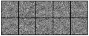

In Chapter 8 we built a classifier by hand. We averaged the images of each digit into a template, scored new images against the templates with one matrix multiplication, and picked the winner with argmax. The whole classifier was a matrix: one column of 784 weights per digit.
Now we ask a different question. Forget averaging. Is there some other matrix that classifies digits even better, and could a computer find it without being told what a “typical 5” looks like? This chapter answers that question in the bluntest way possible: by guessing. It is not how neural networks are usually trained. But it shows, with nothing hidden, what “learning” means for a machine. Learning is a search through a space of possible weights for the ones that work.
Enter PyTorch
From here on we will do our heavy arithmetic in PyTorch. A PyTorch tensor is an array, much like a NumPy array, with two extra powers: it can live on a graphics processor, and it can keep track of the calculations done with it so that derivatives come for free. We will need the second power in the next chapter. For now, tensors look and behave like the arrays we already know:
import torch
t = torch.tensor([1.0, 2.0, 3.0])
print(t * 2)
print(t @ t)
print(t.shape, t.dtype)tensor([2., 4., 6.]) tensor(14.) torch.Size([3]) torch.float32
Converting between the two libraries is easy:
import numpy as np
a = np.arange(6).reshape(2, 3)
t = torch.tensor(a)
print(t)
print(t.numpy())tensor([[0, 1, 2],
[3, 4, 5]])
[[0 1 2]
[3 4 5]]The two libraries agree on almost everything, but a few names differ, and they trip up everyone who moves between them:
| NumPy | PyTorch |
|---|---|
a.sum(axis=1) |
t.sum(dim=1) |
keepdims=True |
keepdim=True |
a.astype(float) |
t.float() |
a.max(axis=1) |
t.max(dim=1).values |
a.argmax(axis=1) |
t.max(dim=1).indices |
The graphics card
Graphics processors were built to compute the colors of millions of pixels at once for video games. That turns out to be exactly the kind of work neural networks need: the same simple arithmetic repeated over huge arrays. The cheap, massively parallel graphics card is one of the main reasons deep learning took off when it did. PyTorch can use an NVIDIA card ('cuda'), the graphics hardware built into Apple-silicon Macs ('mps'), or fall back to the ordinary processor ('cpu'). This snippet picks the best one available:
if torch.cuda.is_available():
device = 'cuda' # an NVIDIA graphics card
elif torch.backends.mps.is_available():
device = 'mps' # an Apple-silicon Mac
else:
device = 'cpu'
print(device)mps
The output in this book was produced on a Mac, so it says mps. Yours may say something else; everything still works, only the speed changes. Random numbers are generated differently on different hardware, so your exact numbers in this and later chapters will differ slightly from the ones printed here, though the story they tell should not.
We load MNIST exactly as in Chapter 8: each image flattened into a row of 784 numbers and scaled to 0–1.
import numpy as np
from torchvision.datasets import MNIST
train_set = MNIST('data', train=True, download=True)
test_set = MNIST('data', train=False, download=True)
X = train_set.data.numpy().reshape(-1, 784) / 255.0
Y = train_set.targets.numpy()
X_test = test_set.data.numpy().reshape(-1, 784) / 255.0
Y_test = test_set.targets.numpy()Then we turn the NumPy arrays into tensors on the device. Labels are whole numbers, so they keep an integer type.
X = torch.tensor(X, dtype=torch.float32, device=device)
Y = torch.tensor(Y, device=device)
X_test = torch.tensor(X_test, dtype=torch.float32, device=device)
Y_test = torch.tensor(Y_test, device=device)
print(X.shape, X.device)torch.Size([60000, 784]) mps:0
As we saw in Chapter 9, a computer’s random numbers come from a recipe that starts at a seed. PyTorch has its own generator, and fixing its seed makes every run of the code repeat exactly:
torch.manual_seed(0) # the same "random" numbers on every runOne random guess
Let’s make a completely random weight matrix and see how it does:
W = torch.randn(784, 10, device=device)
scores = X @ W # (60000, 784) @ (784, 10)
guesses = scores.argmax(dim=1)
print(guesses[:10].cpu())
print(Y[:10].cpu())
print(round((guesses == Y).float().mean().item(), 4))tensor([4, 7, 9, 7, 2, 8, 0, 9, 7, 9]) tensor([5, 0, 4, 1, 9, 2, 1, 3, 1, 4]) 0.0628
About six percent correct, which is no better than chance (ten percent with ten classes, give or take luck). We will be checking the accuracy of weight matrices a lot, so let’s give it a name:
def matrix_accuracy(W, X, Y):
guesses = (X @ W).argmax(dim=1)
return (guesses == Y).float().mean().item()Guess a thousand times
If one random matrix is useless, perhaps the best of a thousand is not. The loop below tries a thousand random matrices and prints a line each time it finds a new best one:
best_acc = 0
for i in range(1000):
W = torch.randn(784, 10, device=device)
acc = matrix_accuracy(W, X, Y)
if acc > best_acc:
best_acc, W_best = acc, W
print(i, round(acc, 4))0 0.062 1 0.1441 17 0.1503 53 0.1591 72 0.1611 134 0.1664 155 0.175 238 0.2394
Some random matrices are better than others. The best gets about 24 percent of the training images right, more than twice chance. But the improvements arrive more and more rarely, and that is the problem with pure guessing. A weight matrix has numbers. The space of possible matrices is so vast that the chance of stumbling onto a good one at random is effectively zero.
Small steps
A better strategy is to stop starting from scratch. Take the best matrix so far, nudge every weight by a little random noise, and keep the result only if it scores better. Repeat. This is hill climbing: blindfolded on a hillside, you take a random step and keep it only if you went up.
To make each step quicker we score on the first 10,000 training images rather than all 60,000:
# a smaller set makes each guess quicker
X_small, Y_small = X[:10_000], Y[:10_000]
W = W_best.clone()
best_acc = matrix_accuracy(W, X_small, Y_small)
step = 0.1
for i in range(20_000):
W_new = W + step * torch.randn(784, 10, device=device)
acc = matrix_accuracy(W_new, X_small, Y_small)
if acc > best_acc:
W, best_acc = W_new, acc
if i % 4000 == 0:
print(i, round(best_acc, 4))
print('final', round(best_acc, 4))0 0.239 4000 0.6698 8000 0.6809 12000 0.6811 16000 0.6824 final 0.6829
Sixty-eight percent. Most of the gain came in the first few thousand steps, after which progress slowed to a crawl: the last 16,000 steps added only about one point. What really matters is how the matrix does on images it was never scored on:
print(round(matrix_accuracy(W, X_test, Y_test), 4))0.6712
Sixty-seven percent on the test set. The machine has found a matrix that does better than our hand-made dot-product templates from Chapter 8 (63 percent), and nobody told it what any digit looks like. It knew only how many answers each guess got right.
Survival of the fittest
Hill climbing follows a single path, one guess at a time. Nature has another trick: keep a whole population of candidates, let the fittest survive, and fill the next generation with their mutated offspring. The graphics card lets us score a hundred candidate matrices at once. We stack them into one tensor M of shape (100, 784, 10) and score them all in a single operation. When one side of @ has an extra axis in front, PyTorch repeats the multiplication for each entry along it, so X_small @ M is X_small @ M[n] for all hundred values of at once, giving scores of shape (100, 10000, 10). After scoring, parents.repeat(N // keep, 1, 1) makes ten copies of the ten survivors, one after another, so the first ten children are the survivors themselves and only the other ninety are mutated.
N, keep = 100, 10 # population size, number of survivors
M = torch.randn(N, 784, 10, device=device) # N candidate matrices
for generation in range(1001):
scores = X_small @ M # (N, 10000, 10)
guesses = scores.argmax(dim=2) # (N, 10000)
fitness = (guesses == Y_small).float().mean(dim=1)
best = fitness.argsort(descending=True)[:keep] # the survivors
parents = M[best]
children = parents.repeat(N // keep, 1, 1) # 10 copies of the 10
noise = torch.randn(N - keep, 784, 10, device=device)
children[keep:] += 0.05 * noise # mutate all but the survivors
M = children
if generation % 200 == 0:
print(generation, round(fitness[best[0]].item(), 4))
W_evolved = M[0]
print('test', round(matrix_accuracy(W_evolved, X_test, Y_test), 4))0 0.1763 200 0.5456 400 0.6094 600 0.7438 800 0.7782 1000 0.7914 test 0.7687
Each generation, the ten best matrices survive unchanged and the other ninety places go to noisy copies of them. After a thousand generations the best matrix gets 77 percent of the test images right. Simulated evolution, with no knowledge of what a digit is, has found a classifier nearly as good as our distance-based templates (82 percent).
Is evolution simply the smarter search? Not by this evidence. Count the guesses each method scored. Hill climbing scored 20,000 matrices. Evolution scored a hundred per generation for 1,001 generations: 100,100 matrices, five times as many. At generation 200, when it had scored about as many as the hill climber, its best was 55 percent, behind the hill climber’s 68. What the population really bought us is the graphics card’s parallelism: scoring a hundred matrices in one operation takes far less than a hundred times as long as scoring one, so we could afford many more guesses. (On the author’s laptop the thousand generations took about as long as the 20,000 hill-climbing steps, roughly 25 seconds each.) The two searches also took different step sizes, 0.1 for the hill climber and 0.05 for the mutations, so even this comparison is not perfectly even. A fair comparison of search methods always counts the budget, changes one thing at a time, and does not trust just the final score.
Finally, let’s look at what was found. Each column of the weight matrix holds 784 numbers, one per pixel, so we can reshape each column back into a image (Figure 10.1).
columns = W_evolved.T.reshape(10, 28, 28).cpu().numpy()
montage_plot(columns, grid_shape=(2, 5), symmetric=True)
To the eye they are pure noise: no digit shapes at all. Yet this matrix gets 77 percent of the test images right, so the useful structure is there, spread thinly across thousands of weights and buried under the randomness the search started from. Random search keeps whatever happens to work and never cleans up anything that does no harm.
What guessing teaches
It is easy to dismiss what we just did as a toy, but every idea in it is central to deep learning:
A classifier is a function with adjustable numbers: here, one matrix multiplication with 7,840 weights.
A score tells us how good a particular setting of the weights is.
Learning is a search for weights with a better score, measured on training data and checked on test data.
What was wasteful was the search itself. Each random step was blind: it tried a direction, looked at the score, and, once the easy gains were gone, threw almost every step away. Imagine instead that, at every point on the hillside, you could feel which way was uphill. You would never waste a step. That feeling for the slope has a name, the gradient, and computing it is what PyTorch does best. It is the subject of the next chapter.